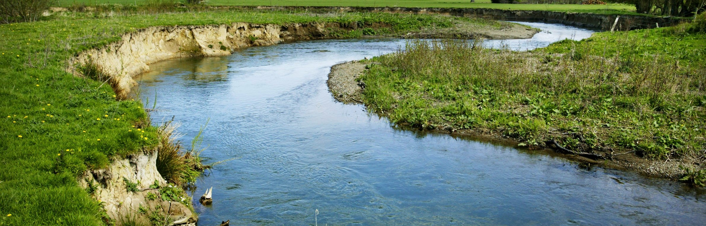
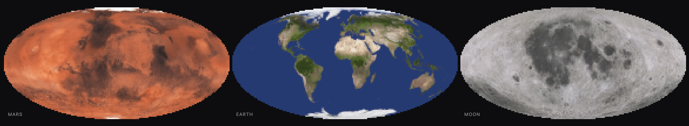
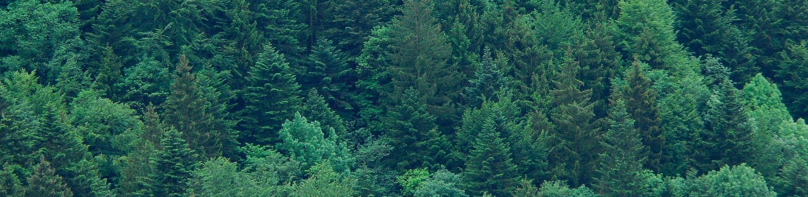

Projects
Things I’ve built. Some run here, some live elsewhere.

Virtual Water Sensor v0.1Drop a pin in an Iowa river, read nitrate predictions as if from an in-situ water sensor. Backend is an XGBoost model trained on 80 nitrate sensors in Iowa, it uses crop, nitrogen-surplus, fertilizer and weather data to create forecasts, thoroughly optimized in order to run in-browser. This version was completed over 8-weeks during the summer of 2026 at the Erdos Institute Datascience Bootcamp, where it won first prize. A far more capable model built for the whole cornbelt is under development.
8-Bit Planet ThingI just wanted to see what this looked like. It takes an equal-area tiling of a sphere and then averages the color of each tile. The animate toggle causes the color to smoothly walk through the set of all colors sampled.
Evergreen NotesThe note-taking system that I built.